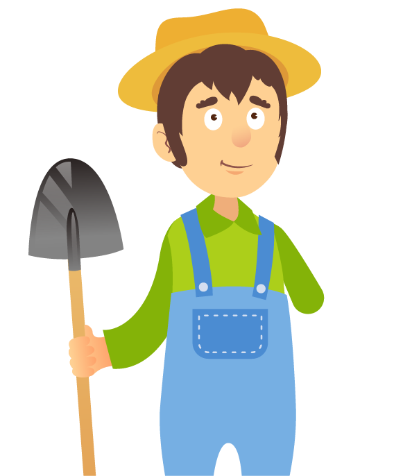

¡Bienvenido!
Luego de estudiar la legislación y normativa colombiana relacionada con las buenas prácticas agropecuarias, te invito para que me ayudes a completar todos los integrantes de mi granja y así poder comenzar a aplicarlas.
¿Cómo lo vas a hacer?
Primero elige el sector agropecuario que deseas trabajar, y luego lee con detalle cada una de las instrucciones para así completar mi granja
Agricultura y
Granjas Avícolas
Bioseguras
Ganadería